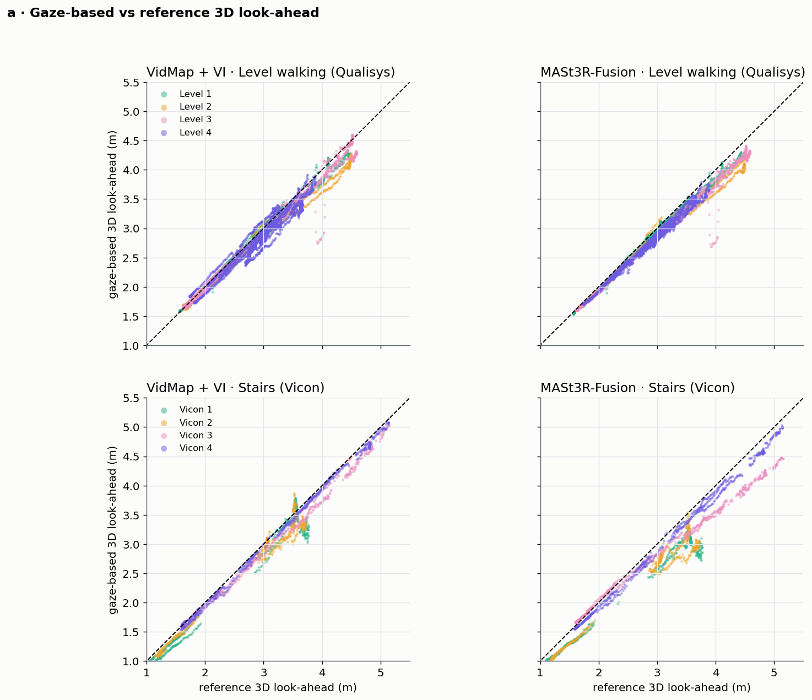
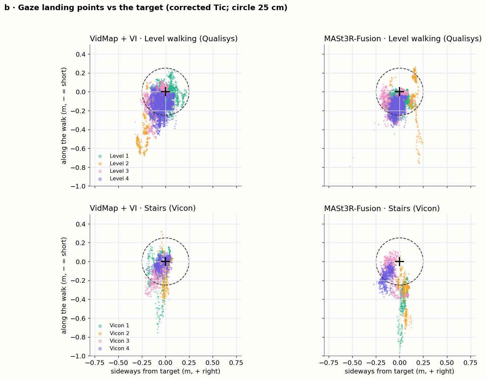
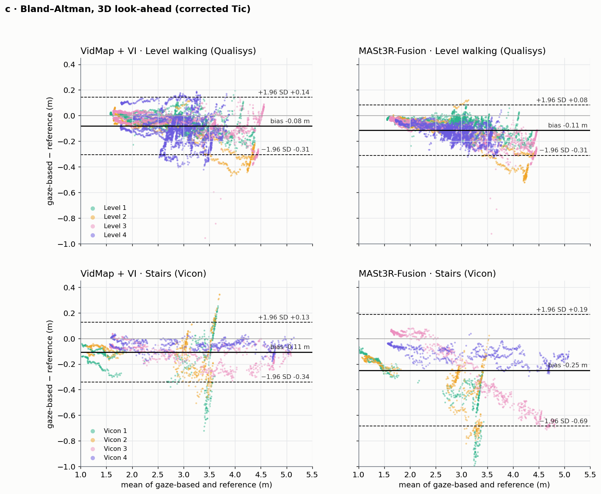
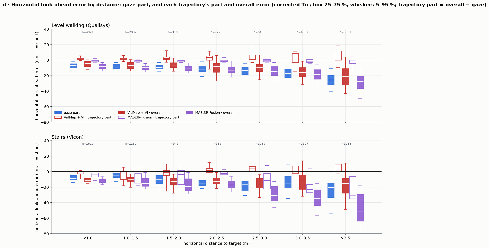
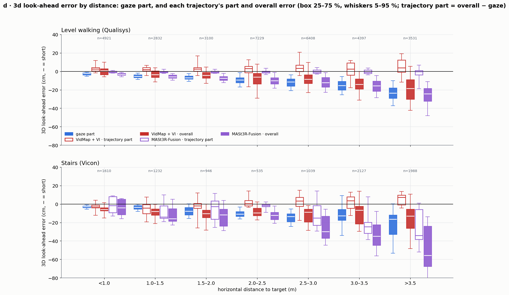

Look-ahead Distance Validation for Neon-IMU-Analysis
This page shows the validation of the look-ahead distance computed from Pupil Labs Neon gaze and our egocentric trajectories, against motion capture.
Pipeline
The validation pipeline. Pupil Labs Neon glasses and three IMUs (pelvis, left and right foot) are calibrated and time-synchronised. The Neon data go to the Pupil Labs analysis, which gives the eye and pupillometric metrics and the gaze direction; the gaze combined with the glasses' trajectory from our trajectory pipeline (VidMap + VI [3]) gives the look-ahead distance. Greyed out: the trajectory processing (validated on the trajectory validation page), the eye and pupillometric metrics (taken as provided by Pupil Labs [2]) and the biomechanical branch (validated separately, biomechanical validation); the red box gives what this page checks. The overall pipeline is in the Neon-IMU-Pipeline repository.
Aim
Only the look-ahead distance — how far ahead on the ground a person looks while walking, an important metric for real-world analysis [8, 9] — is validated here. Other pupillometric and eye-kinematic metrics, such as fixations and saccades, are taken as provided by the Pupil Labs software [2].
Dataset
Eight trials with the same participant and Neon glasses (four individual reflective markers on the frame), in two motion capture laboratories at Liverpool John Moores University. A target made from a cluster of reflective markers was placed at a constant location; the participant walked towards it whilst fixating on it. Every recording starts with head nods, used to synchronise the Neon and the motion capture.
- Level walking (Level 1–4; Qualisys, 100 Hz): the target on the floor; the participant approached it several times in one long fixation period (two periods in Level 2).
- Stairs (Vicon 1–4; Vicon, 100 Hz): on the laboratory staircase, three approaches per trial. Vicon 1–2: the target on a step of the staircase (1.27 m above the floor); Vicon 3–4: the target on the floor at the foot of the staircase, approached walking down the stairs.
The fixation periods are marked in Pupil Cloud with the events fixationStart and fixationEnd (numbered when there are several). All analyses use the gaze samples inside these windows.
| trial | target | fixation windows (s) | total (s) | horizontal distance (m) | gaze samples | with target in video | with reference |
|---|---|---|---|---|---|---|---|
| Level 1 | floor | 34.3–88.6 | 54.3 | 0.4–4.2 | 9844 | 9838 | 9838 |
| Level 2 | floor | 78.8–86.6; 97.5–106.5 | 16.7 | 0.5–4.2 | 3187 | 3174 | 3174 |
| Level 3 | floor | 56.4–104.3 | 47.8 | 0.4–4.3 | 8884 | 8864 | 8864 |
| Level 4 | floor | 22.9–79.5 | 56.5 | 0.7–3.5 | 10624 | 10592 | 10568 |
| Vicon 1 | staircase step (1.27 m) | 48.5–56.7; 68.5–76.2; 90.0–98.3 | 24.2 | 0.4–3.7 | 4786 | 4752 | 2084 |
| Vicon 2 | staircase step (1.27 m) | 40.3–49.2; 60.7–69.1; 80.4–88.4 | 25.2 | 0.7–3.7 | 4815 | 4792 | 1963 |
| Vicon 3 | floor, foot of the stairs | 47.3–54.3; 63.4–71.2; 80.5–87.8 | 22.1 | 0.3–4.0 | 4355 | 4330 | 2871 |
| Vicon 4 | floor, foot of the stairs | 47.4–54.9; 64.0–71.4; 80.3–87.8 | 22.4 | 0.3–4.0 | 4337 | 4325 | 2559 |
Gaze samples at 200 Hz inside the fixation windows (glasses worn, no blinks); with the target in the video: the target was tracked in the scene video (see Metrics); with reference: the motion capture had the glasses' 6-DOF pose. On the stairs the glasses' rigid body is often lost (markers occluded by the staircase and the hand rail), so fewer samples have a reference.
Reference
The reference look-ahead distance is the distance from the glasses to the target, from motion capture only — in 3D, and horizontally (x and y; z is up):
- Glasses: the 6-DOF pose of the Neon rigid body (Qualisys rigid body; Vicon Nexus segment). Frames where the pose misses one of its markers by more than 5 mm are dropped; samples without a valid pose have no reference.
- Target: the mean of the median positions of the target's markers (static).
- Synchronisation: the Neon IMU and the motion capture clocks are aligned by correlating |Neon gyro| with the rigid body's rotation rate, fitted on the head nods at the start of each trial (as in [3]). On the Vicon trials the rotation rate is taken over 0.1 s, as the four closely spaced markers make frame-to-frame rates noisy (correlation 0.94 on all four trials).
The reference uses neither the trajectory pipeline, nor the gaze, nor the camera mounting.
Metrics
Target in the video. The target is tracked in the Neon scene video with SAM 2 [10] (segmentation from one click, one run per fixation window, seeded from the gaze: inside a fixation window the gaze is within about 2° of the target) and checked with CoTracker3 [11] (point tracking). The tracks were inspected on review videos; frames where the mask jumps or is much larger than the target at its distance are dropped. This gives the target's pixel in every frame, independently of any pose.
Look-ahead distance from gaze (gaze point only; the optical axes are not used). At each gaze sample, Pupil Labs' gaze pixel (undistorted with the scene camera's calibration) is turned into a ray, placed in the world with the camera pose of a trajectory and intersected with the horizontal plane at the target's height; the look-ahead distance is the distance from the camera to that point, in 3D and horizontally. Error = gaze-based − reference (negative: the gaze lands short of the target).
Split into a gaze part and a trajectory part.
- Gaze part: the error with a perfect trajectory. The camera is put at the glasses' mocap position and turned so that the tracked target pixel points exactly at the target (roll from the Neon IMU's gravity); the gaze ray then carries only the offset between the gaze and the target seen in the video, converted to centimetres on the floor.
- Trajectory part: overall error − gaze part, per sample.
Trajectories. VidMap + VI [3, 4] (VidMap on the scene video, then the VI factor graph with the Neon IMU: metric scale estimated from the IMU, gravity-aligned) and MASt3R-Fusion [12] (visual–inertial), from the end of the head nods to the last fixationEnd, placed in the motion capture frame with a yaw + translation fit on the camera positions.
Statistics, per gaze sample: medians, by horizontal (or 3D) reference distance; agreement as Bland–Altman bias and 95 % limits [7]. Only samples where both trajectories have a pose are used, so the two are compared on the same samples.
Results
Horizontal look-ahead error by reference distance
| reference horizontal look-ahead (m) | samples | gaze offset (°) | gaze part (cm) | VidMap + VI | MASt3R-Fusion | ||||
|---|---|---|---|---|---|---|---|---|---|
| error (cm) | error (%) | trajectory part (cm) | error (cm) | error (%) | trajectory part (cm) | ||||
| Level walking (Qualisys) | |||||||||
| <1 | 4921 | 2.6 | -6.8 | -4.4 | -8.7 | +1.8 | -7.8 | -12.9 | -1.2 |
| 1–1.5 | 2832 | 2.2 | -9.0 | -7.2 | -5.8 | +1.9 | -9.8 | -7.8 | -1.2 |
| 1.5–2 | 3100 | 1.8 | -9.4 | -7.3 | -4.2 | +2.4 | -10.4 | -6.1 | -1.2 |
| 2–2.5 | 7229 | 1.8 | -11.6 | -8.4 | -3.7 | +3.4 | -12.9 | -5.8 | -0.9 |
| 2.5–3 | 6408 | 1.7 | -13.5 | -9.9 | -3.7 | +3.9 | -14.7 | -5.4 | -0.8 |
| 3–3.5 | 4397 | 1.6 | -17.3 | -15.9 | -4.9 | +2.8 | -18.6 | -5.7 | -1.3 |
| >3.5 | 3531 | 1.7 | -25.7 | -20.8 | -5.4 | +4.0 | -27.6 | -7.0 | -1.0 |
| all | 32418 | 1.8 | -11.8 | -9.1 | -4.5 | +2.7 | -12.7 | -6.6 | -1.0 |
| Stairs (Vicon) | |||||||||
| <1 | 1610 | 3.0 | -9.0 | -11.0 | -16.8 | -1.9 | -12.3 | -18.4 | -3.1 |
| 1–1.5 | 1232 | 1.3 | -4.6 | -9.8 | -7.7 | -4.4 | -15.4 | -13.0 | -13.1 |
| 1.5–2 | 946 | 1.6 | -9.9 | -12.8 | -7.4 | -1.3 | -19.4 | -10.7 | -3.4 |
| 2–2.5 | 535 | 2.1 | -14.9 | -12.5 | -5.4 | +1.3 | -17.1 | -7.8 | -2.4 |
| 2.5–3 | 1039 | 1.9 | -16.9 | -13.3 | -4.8 | +3.6 | -30.5 | -10.6 | -11.3 |
| 3–3.5 | 2127 | 1.1 | -14.8 | -10.9 | -3.4 | +3.4 | -34.5 | -10.6 | -23.3 |
| >3.5 | 1988 | 1.4 | -20.5 | -15.2 | -4.0 | +7.4 | -51.0 | -13.7 | -31.1 |
| all | 9477 | 1.5 | -12.2 | -11.6 | -6.2 | +0.6 | -21.4 | -12.5 | -11.9 |
Medians over the samples in each bin (all trials of each laboratory). Gaze offset: angle between the gaze and the tracked target in the video. Error (%) is relative to the reference distance. Trajectory part = overall − gaze part, per sample (medians do not add exactly).
3D look-ahead error by reference distance
| reference 3D look-ahead (m) | samples | gaze offset (°) | gaze part (cm) | VidMap + VI | MASt3R-Fusion | ||||
|---|---|---|---|---|---|---|---|---|---|
| error (cm) | error (%) | trajectory part (cm) | error (cm) | error (%) | trajectory part (cm) | ||||
| Level walking (Qualisys) | |||||||||
| <2 | 6081 | 2.6 | -2.6 | -0.5 | -0.3 | +2.2 | -3.4 | -2.0 | -0.7 |
| 2–2.5 | 4139 | 1.9 | -6.1 | -4.2 | -1.9 | +2.3 | -6.7 | -3.0 | -0.8 |
| 2.5–3 | 8063 | 1.8 | -9.2 | -5.9 | -2.1 | +3.2 | -10.1 | -3.7 | -0.7 |
| 3–3.5 | 7166 | 1.7 | -11.6 | -8.7 | -2.7 | +3.2 | -12.2 | -3.8 | -0.6 |
| 3.5–4 | 3958 | 1.7 | -16.6 | -14.8 | -4.0 | +3.4 | -17.1 | -4.6 | -0.9 |
| >4 | 3011 | 1.7 | -23.4 | -20.2 | -4.7 | +3.5 | -24.8 | -5.7 | -0.3 |
| all | 32418 | 1.8 | -8.9 | -6.0 | -2.3 | +2.9 | -9.2 | -3.4 | -0.7 |
| Stairs (Vicon) | |||||||||
| <2 | 2856 | 1.6 | -2.8 | -7.0 | -4.7 | -3.7 | -12.0 | -10.2 | -9.6 |
| 2–2.5 | 666 | 2.1 | -6.2 | -6.5 | -2.9 | +0.2 | -2.7 | -1.3 | +7.9 |
| 2.5–3 | 823 | 1.8 | -10.5 | -9.3 | -3.4 | +0.4 | -11.2 | -4.1 | -1.7 |
| 3–3.5 | 1428 | 0.9 | -11.1 | -10.3 | -3.2 | +1.5 | -31.3 | -9.9 | -22.9 |
| 3.5–4 | 2104 | 1.3 | -16.4 | -9.4 | -2.6 | +6.2 | -38.4 | -10.5 | -25.4 |
| >4 | 1600 | 1.7 | -15.1 | -8.8 | -1.9 | +7.7 | -28.6 | -6.4 | -11.3 |
| all | 9477 | 1.5 | -9.1 | -8.0 | -3.5 | -0.2 | -19.0 | -9.1 | -13.3 |
The same with the 3D distance. It includes the eye height (about 1.6 m), so its errors and percentages are smaller, especially close to the target.
Per trial
| trial | samples | gaze offset (°) | gaze part (cm) | VidMap + VI (cm) | MASt3R-Fusion (cm) | |||||
|---|---|---|---|---|---|---|---|---|---|---|
| horizontal | 3D | horizontal | 3D | trajectory part (h) | horizontal | 3D | trajectory part (h) | |||
| Level 1 | 9832 | 1.6 | -9.4 | -7.1 | -7.1 | -5.1 | +2.7 | -8.2 | -5.9 | +0.6 |
| Level 2 | 3167 | 1.9 | -10.3 | -6.7 | -11.4 | -8.7 | +0.1 | -12.0 | -8.9 | -1.8 |
| Level 3 | 8858 | 1.9 | -12.3 | -8.7 | -8.0 | -4.0 | +3.1 | -14.3 | -10.1 | -2.4 |
| Level 4 | 10561 | 2.0 | -14.2 | -11.7 | -12.9 | -10.9 | +3.1 | -15.5 | -12.7 | -1.1 |
| Vicon 1 | 2084 | 1.0 | -3.8 | -3.0 | -13.3 | -13.5 | -5.9 | -31.5 | -31.7 | -30.6 |
| Vicon 2 | 1963 | 1.0 | -7.5 | -7.1 | -10.6 | -10.5 | -1.6 | -29.5 | -29.1 | -23.1 |
| Vicon 3 | 2871 | 2.4 | -15.1 | -10.9 | -13.7 | -9.6 | -0.2 | -19.7 | -13.6 | -3.2 |
| Vicon 4 | 2559 | 1.9 | -14.9 | -11.3 | -9.1 | -4.6 | +6.5 | -17.1 | -11.7 | -2.8 |
Medians over each trial's fixation windows.
Trajectory accuracy
| trial | mocap path (m) | VidMap + VI | MASt3R-Fusion | ||
|---|---|---|---|---|---|
| ATE, yaw + translation (m) | scale (Sim(3)) | ATE, yaw + translation (m) | scale (Sim(3)) | ||
| Level 1 | 50 | 0.102 | 1.01 | 0.085 | 0.99 |
| Level 2 | 67 | 0.139 | 0.97 | 0.204 | 1.07 |
| Level 3 | 57 | 0.075 | 0.99 | 0.114 | 1.04 |
| Level 4 | 53 | 0.106 | 0.99 | 0.021 | 1.00 |
| Vicon 1 | 39 | 0.135 | 0.98 | 0.117 | 1.03 |
| Vicon 2 | 44 | 0.132 | 1.00 | 0.138 | 1.03 |
| Vicon 3 | 41 | 0.108 | 1.02 | 0.397 | 1.21 |
| Vicon 4 | 43 | 0.142 | 1.01 | 0.151 | 1.03 |
Over each trial's run (end of the head nods to the last fixationEnd), against the motion capture camera positions. ATE after the yaw + translation fit used above; the Sim(3) scale shows the metric scale error (1 = exact).
Figures

Gaze-based against reference 3D look-ahead, coloured by trial (every 4th sample).

Where the gaze lands relative to the target, rotated so that the direction from the glasses to the target points up (circle: 25 cm).

Bland–Altman, 3D look-ahead; bias and limits over all samples of each laboratory. The 200 Hz samples are strongly correlated, so the limits are descriptive.

Horizontal look-ahead error by distance. Blue: the gaze part (same for both trajectories); open boxes: each trajectory's part; filled: each trajectory's overall error. Box 25–75 %, whiskers 5–95 %.

The same for the 3D look-ahead.
Summary
- The gaze-based look-ahead distance is shorter than the reference, mainly because the gaze itself points ~1.5–2° below the target (seen directly in the video): the gaze part is −9 to −12 cm horizontally at 1.5–3 m and grows with distance, the same in both laboratories.
- VidMap + VI adds almost no error: its trajectory part is +2.7 cm (level walking) and +0.6 cm (stairs), median horizontal; overall error −9.1 cm (level) and −11.6 cm (stairs), −7.3 / −12.8 cm at 1.5–2 m. Bland–Altman bias (3D): −0.08 m (level) and −0.11 m (stairs).
- MASt3R-Fusion is as good on level walking (trajectory part −1.0 cm, overall −12.7 cm) but worse on the stairs (trajectory part −11.9 cm, overall −21.4 cm; bias −0.25 m), mostly on Vicon 1–3 (scale 1.21 on Vicon 3).
References
- Castellaz, Wouda & van Beijnum. Estimating 3D Ground Reaction Forces During Daily Activities: A Reduced Sensor Setup and Virtual Pivot Point Approach. IEEE Transactions on Neural Systems and Rehabilitation Engineering 33 (2025).
- Pupil Labs. Neon documentation (gaze, 3D eye states, fixations and saccades).
- Radhakrishnan & Hollands. Metric trajectories and maps from egocentric video + IMU — validation.
- VidMap. github.com/cvg/vidmap.
- Zhang, Tao, Dellaert & Fallon. ScaRF-SLAM: Scale-Consistent Reconstruction with Feed-Forward Models and Classical Visual SLAM. IEEE Robotics and Automation Letters (2026).
- Depth Anything 3. github.com/ByteDance-Seed/Depth-Anything-3.
- Bland & Altman. Statistical methods for assessing agreement between two methods of clinical measurement. The Lancet 327, 307–310 (1986).
- Matthis, Yates & Hayhoe. Gaze and the control of foot placement when walking in natural terrain. Current Biology 28, 1224–1233 (2018).
- Chapman & Hollands. Evidence for a link between changes to gaze behaviour and risk of falling in older adults during adaptive locomotion. Gait & Posture 24, 288–294 (2006).
- Ravi et al. SAM 2: Segment Anything in Images and Videos. arXiv 2408.00714 (2024).
- Karaev et al. CoTracker3: Simpler and Better Point Tracking by Pseudo-Labelling Real Videos. arXiv 2410.11831 (2024).
- Zhou, Li, Li, Yan, Xia & Feng. MASt3R-Fusion: Integrating Feed-Forward Visual Model with IMU, GNSS for High-Functionality SLAM. arXiv 2509.20757 (2025); code.